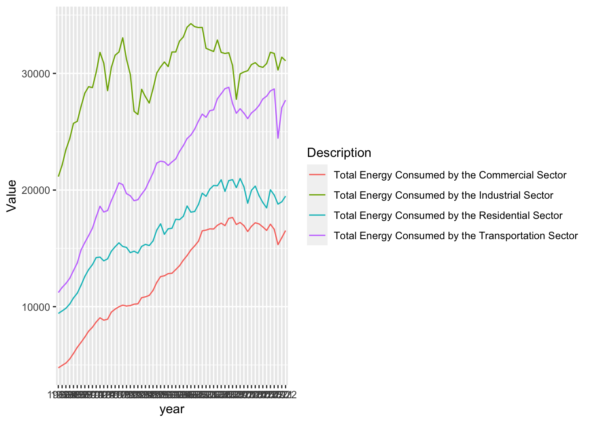
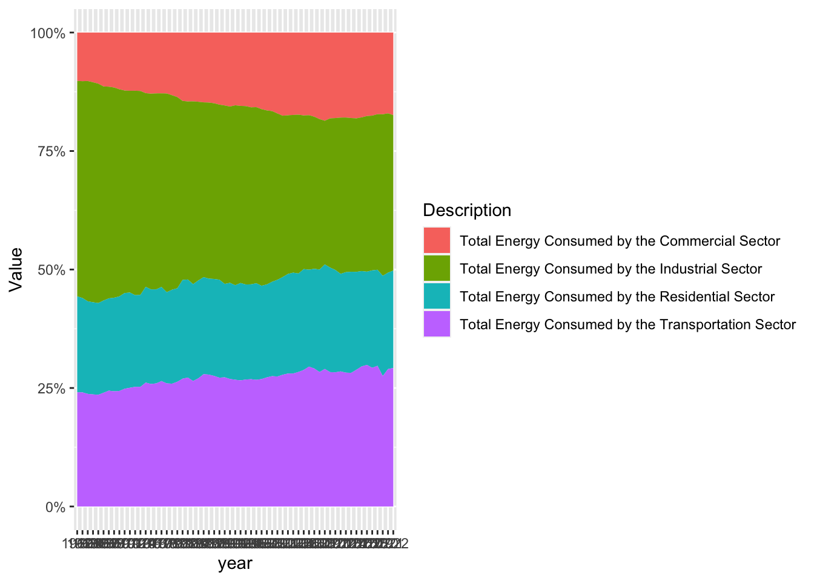
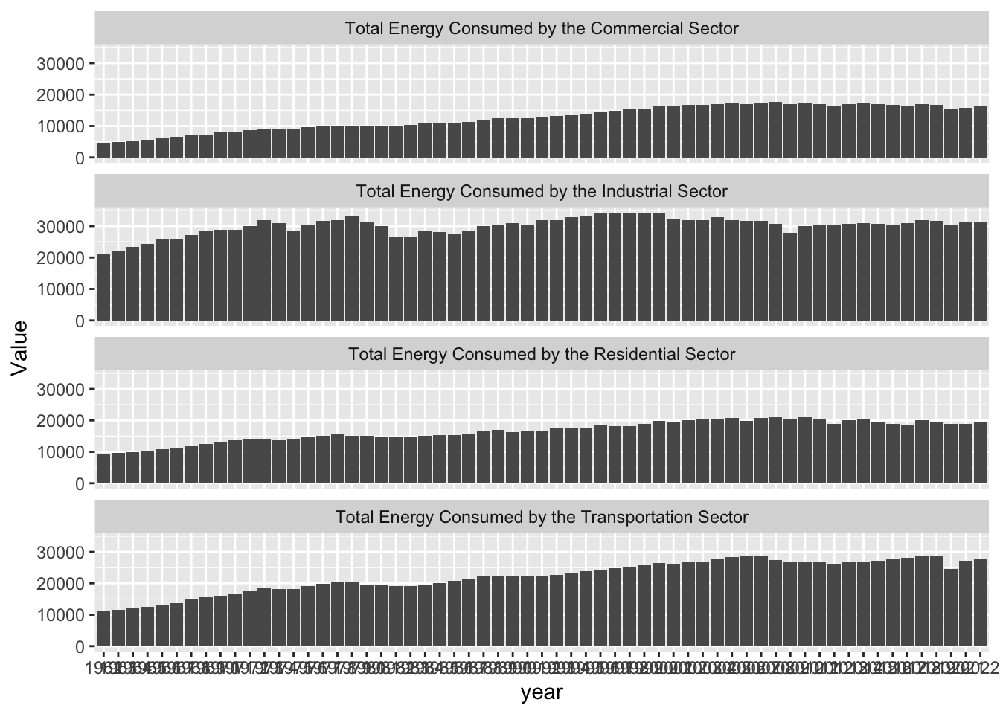

#-------------------------------------------------------------------------------# load in the packages #-------------------------------------------------------------------------------library(tidyverse)
── Attaching core tidyverse packages ──────────────────────── tidyverse 2.0.0 ──
✔ dplyr 1.1.4 ✔ readr 2.1.5
✔ forcats 1.0.0 ✔ stringr 1.5.1
✔ ggplot2 3.4.4 ✔ tibble 3.2.1
✔ lubridate 1.9.3 ✔ tidyr 1.3.1
✔ purrr 1.0.2
── Conflicts ────────────────────────────────────────── tidyverse_conflicts() ──
✖ dplyr::filter() masks stats::filter()
✖ dplyr::lag() masks stats::lag()
ℹ Use the conflicted package (<http://conflicted.r-lib.org/>) to force all conflicts to become errors
library(stringr)library(forcats)#-------------------------------------------------------------------------------# read in the data #-------------------------------------------------------------------------------sector_1of2 <-read_csv(here::here("data", "res_com_ind_sectordata.csv"))
Rows: 10260 Columns: 6
── Column specification ────────────────────────────────────────────────────────
Delimiter: ","
chr (3): MSN, Description, Unit
dbl (3): YYYYMM, Value, Column_Order
ℹ Use `spec()` to retrieve the full column specification for this data.
ℹ Specify the column types or set `show_col_types = FALSE` to quiet this message.
Rows: 8208 Columns: 6
── Column specification ────────────────────────────────────────────────────────
Delimiter: ","
chr (3): MSN, Description, Unit
dbl (3): YYYYMM, Value, Column_Order
ℹ Use `spec()` to retrieve the full column specification for this data.
ℹ Specify the column types or set `show_col_types = FALSE` to quiet this message.
Clean & wrangle your data
#------------------------------------------------------------------------------# Clean Sector 1 Data #-------------------------------------------------------------------------------# Convert the combined yyyymm column to character stringsector_1of2$YYYMM <-as.character(sector_1of2$YYYYMM)# Extract the year and month using substr() into two spearate columnssector_1of2$year <-substr(sector_1of2$YYYYMM, 1, 4)sector_1of2$month <-substr(sector_1of2$YYYYMM, 5, 6)#redefine the dataframesector_1of2 <- sector_1of2 %>%#Filter to only the annual summationsfilter(month =="13") %>%#Filter to only the total energy usagefilter(str_detect(Description, 'Total Energy Consumed')) %>%#Filter to show only the last 40 yearsfilter(year >"1961") %>%#Select only the columns of interestselect(Value, Description, Unit, year)#------------------------------------------------------------------------------# Clean Sector 2 Data #-------------------------------------------------------------------------------# Convert the combined yyyymm column to character stringsector_2of2$YYYMM <-as.character(sector_2of2$YYYYMM)# Extract the year and month using substr() into two spearate columnssector_2of2$year <-substr(sector_2of2$YYYYMM, 1, 4)sector_2of2$month <-substr(sector_2of2$YYYYMM, 5, 6)#redefine the dataframesector_2of2 <- sector_2of2 %>%#Only keep the rows that have the annual summationsfilter(month =="13") %>%#Only kep the total energy usage rowsfilter(str_detect(Description, 'Total Energy Consumed')) %>%#Dont keep the rows that have the totals for all the sectorsfilter(Description !='Total Energy Consumed by the End-Use-Sectors') %>%#Only look at the last 40 yearsfilter(year >"1961")%>%#Only select the columns of interestselect(Value, Description, Unit, year)#------------------------------------------------------------------------------# Combine Dataset #-------------------------------------------------------------------------------#Bind the two datasetssct_data <-rbind(sector_1of2,sector_2of2)
Create at least three exploratory visualizations
#Create a line chart showing the total energy usage for each sector over timesct_data %>%ggplot(aes(x = year, y = Value, group = Description, color = Description)) +geom_line()

#Create an area plot that shows the percentage of the total energy consumption that came from each sectorsct_data %>%ggplot(aes(x = year, y = Value, group = Description, fill = Description)) +geom_area(position ="fill") +scale_y_continuous(labels = scales::label_percent(scale =100))

#Create a bar chart that shows the change in energy usage by sector over timesct_data %>%ggplot(aes(x = year, y = Value))+geom_col()+facet_wrap(~Description, ncol =1) #Facet wrap by sector

Post-assignment questions
What have you learned about your data? Have any potentially interesting patterns emerged? (5-8 sentences).
This is something that I kind of already knew about datasets but sometimes instead of making an annual totals spreadsheet, they will make a month called the 13th month. That row is the total of all the months of the year so you don’t have to sum by year but then I had to filter by the 13th month to get annual data.
I also didn’t initially realize that there was a sector that was summing the use from all the sectors which was throwing off a lot of by area/line plots.
One interesting pattern that seems to be occurring is that the energy usage by sector seems to be plateauing, which is pretty cool. Since I’ve been studying energy usage, the number has just always gone up so it’s actually really inspiring to see the consumption slowing. I might reduce my timeline to focus on that.
In HW #1, you outlined some questions that you wanted to answer using these data. Have you made any strides towards answering those questions? If yes, how so? If no, what next steps do you need to take (e.g. I need to create X plot type, I still need to track down Y data, I need to restructure existing data so that you can visualize it in Z ways, etc.)? (8-12 sentences)
Yes, I have made some very good strides towrd answering how energy usage by sector has changed over time. I’ve gotten a really good feel for that just by looking at these exploratory graphs. It’s clear from the exploratory graphs that the transportation and industrial sector use much more energy than the residential and commercial sectors.
As I mentioned above I might reduce my timeline to focus on the reduction of energy usage in recent years. With a smaller timeline, I might be able to add in some data showing which source that energy came from for each year so we can see if energy is becoming more sustainable as energy efficiency is increasing.
One extra question that I would be interested in is to see how the monthly energy usage for the residential sector varies over the timeline to hopefully identify peak months. I could potentially relate this back to climate change issues. In order to do this, I would need to re-wrangle the data so that I could get monthly data rather than annual data and use a ridgeline plot like we saw in lecture.
What challenges do you foresee encountering with your data? These can be data wrangling and / or visualization challenges. (4-6 sentences)
So, I had to turn the year/month column into a character string to break it apart into the month and year separately. I’m not actually sure how much of a problem that is going to be, but given how much trouble I had with Part 1 turning the numerical date into a date, I might have an issue. I do think the as.Date feature in R takes a character string and makes in into a date but i will see if I need to do that.
Another issue I might run into is really trying to narrow down my question. The website I picked has so much energy data and this is the first time I’ve really played with this data myself. I might get a little too ambitious in trying to incorporate more data than is digestible into my visualizations.